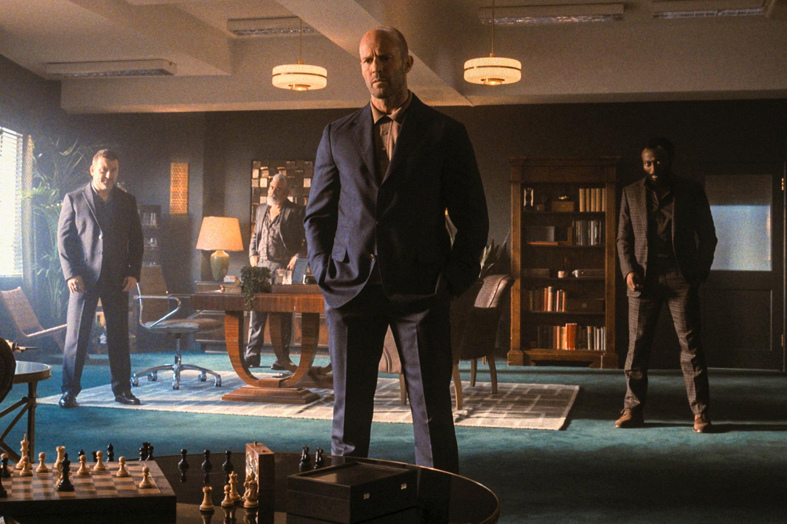
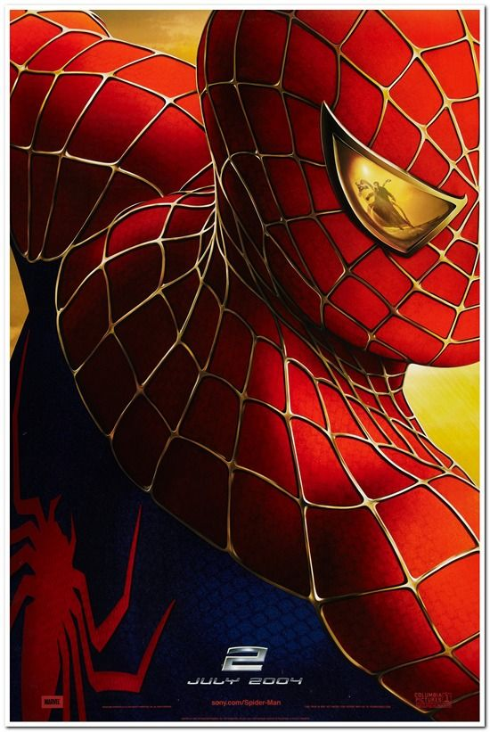

Movie Reviews
Our Overlords have determined that the Movie Theaters are too dangerous for you, but not before I got the chance to see Tenet.
Wrath of Man
Jason Statham stars in this Guy Ritchie cash truck robbery revenge story.
I'm a little confused by the plot but I just think this movie was extremely riveting and well done. It's not my favorite movie but the actual cinematography is one of the best I've ever seen.
It reminds me of The Town with Ben Affleck and Jeremy Renner. This movie is not as good as the Town in terms of story but the action might even be better.
Definitely an awesome movie and I had a great time watching it so I'll give it a 9/10. I really was blown away by how epic it was but it just has something missing in terms of a perfect movie.
I really like how the movie has an opening scene of an event, and then we get to experience it from multiple perspectives throughout the movie. This movie doesn't hold your hand, and leaves you trying to figure it out, and the twists and turns are something you won't see coming. I think it's definitely worth watching twice, and it qualifies as a must watch.
I would say that I don't agree with the values portrayed in this movie. Some things they make seem cool are not okay with me personally, but in terms of entertainment this movie is just very well done. I would criticize the plot but I think I just need to watch it again and it might make more sense.
9/10
The Departed
11/10
This is my favorite movie ever.
An action-drama with a phenomenal cast.
Matt Daemon and Leonardo DiCapprio kill it in this movie.
Not to mention tremendous performances by Alec Baldwin, Mark Walberg, and Martin Sheen.
I met Martin Sheen in real life and he was very nice.
I'll see basically anything with Leo in it, but this is his best character in my opinion. William Costigan Jr. is a total badass.
X- Men First Class
I just rewatched this movie and it was really good. Excellent origin story of Professor X and Magneto
I guess what prevents it from being a ten is that the supersonic guy is kind of dumb, and the devil guy looks kind of cartoonish. I thought Shaw was a decent bad guy and I just love the realationship between Magneto and Charles Xavier. I also liked the female CIA agent, very pretty and a good actress, Rose Byrne.
Magneto really is justified by his backstory as a holocaust survivor. Very interesting movie. Days of Future Past is really good too, I'll watch that next.
9.25/10
A Quiet Place
9.5/10
This movie does a lot of things right.
A horror movie with a unique style and very good characters
There may be some plot holes, and it kind of suffers from bird-box syndrome where the horror is mostly off-screen. In that movie you never see the monsters, but in this movie you briefly do, and it's terrifying
Now with the sequel coming out, I'm rewatching the first one and the sequel is getting good reviews.
This is a very quiet movie and I think in theaters it would be terrifyingly quiet as well. Brilliant work by the director.
I'm actually disappointed John won't be in the sequel
Stand and Deliver
9/10
This is a great movie from 1988 I just watched
It's about a highschool teacher who turned a stuggling latino school into one of the top AP Calculus schools.
The AP board thought they were cheating. It's based on a true story.
That's the real picture of the real students and teacher.
I love math and teaching math and I can relate to the idea that the students rise to the level of expectations placed on them. Very cool concept.
I passed some AP tests in high school but not for calculus. I still haven't ever taken a calculus test but I mastered everything precalculus so that I can eventually master calculus as well and see what I can do. Idk. I view it as a fun challenge. The only AP test I got a perfect score on was for Psychology.
Memento
10/10
This is a masterpiece of filmmaking
From the opening shot, you are drawn in and completely enthralled.
The level of intelligence going on in the way this was filmed really just makes me humbled by the experience.
You see Christopher Nolan smiling while explaining it on a chalkboard there, and it's really difficult to imagine pulling something like that off.
It reminds me of The Last of Us in terms of quality where I just felt spoiled getting to experience it. Like you put in all that work for years, and I just lap it up without having to work on it at all? It's almost criminal.
Spiderman 2

10/10
This movie is still the best. I think it's my favorite movie ever. The action is insane and the story is wonderful. The movie is so simple yet so complex. I love the way spiderman and doc oc move around the city, and the dilemna Peter Parker faces with being or not being spiderman is amazing to watch. This movie has everything.
King Kong (2005)

10/10
I recently watched King Kong: Skull Island and thought it was not as good as the remake from 2005. I missed Skull Island in theaters because I thought it was too soon for another remake as the 2005 one left a big impact on me. I watched Skull Island finally because I saw the trailer for King Kong Vs. Godzilla, which looks awesome. Skull Island would be like a 6/10 at best. The original King Kong is so much better in every way. I give it a 10 because it's a masterpiece, with a great 3 act structure. Skull island is basically only act 2, but enough about that movie. This Peter Jackson 2005 version is king. The chemistry between a CGI ape and Naomi Watts is really unlike anything I've ever seen. It's such a spectacular movie. Kong takes on multiple T-rex's with a blonde in his hand (and feet) the whole time. In Skull Island, he takes on a few lizard things. It's really stupid. I wish it never happened. Anyway, the 2005 version is heartbreaking, and has excellent characters. I highly recommend rewatching it.
Tropic Thunder

10/10
"I'm the dude, playing a dude disguised as another dude". This movie is tremendous. Not only will it make you roll on the floor laughing, it is genuinely exciting. It's a masterpiece of action comedy with a star cast. You see Stiller, Downey Jr, and Black in this image, but there's also terrific performances from Matthew McConnehey and most of all Tom Cruise. This is easily Tom Cruises best comedic performance and he's somehow the funniest actor in this amazingly funny movie. Also the guy from She's out of my league is funny and the Booty Sweat guy is good too. Also Danny McBride. Can't recommend this movie enough.
Tenet

7/10
This is one of the most difficult movies to review. I enjoyed watching it in theaters. Too much of it doesn't make sense. Why does The Protagonist go so far out of his way to save the bad guy's wife if he is dealing with a platonium level threat as a secret agent? There is not enough of character development to justify his strange decisions to basically risk the fate of world on saving the bad guy's wife. That doesn't even scratch the surface on difficultly understanding this film. The bad guy is getting help from the future to destroy the past. Why? I've seen it 3 times and I still don't know why. Also, the whole going inverted and then driving a car and it explodes so you get hypothermia thing? No thanks. However, this movie does certain things very well like a breathtaking action packed opening scene along with the smooth way The Protagonist wins fist fights. The inversion thing is cool initially, it's only very frustrating on the rewatch when you're hoping to truly understand this movie. It has it's moments, and is very ambitious. I was going to give it a 4/10 because it's closer to a disaster than a masterpiece but I had so much fun watching it the first time that I have to give it a 7.